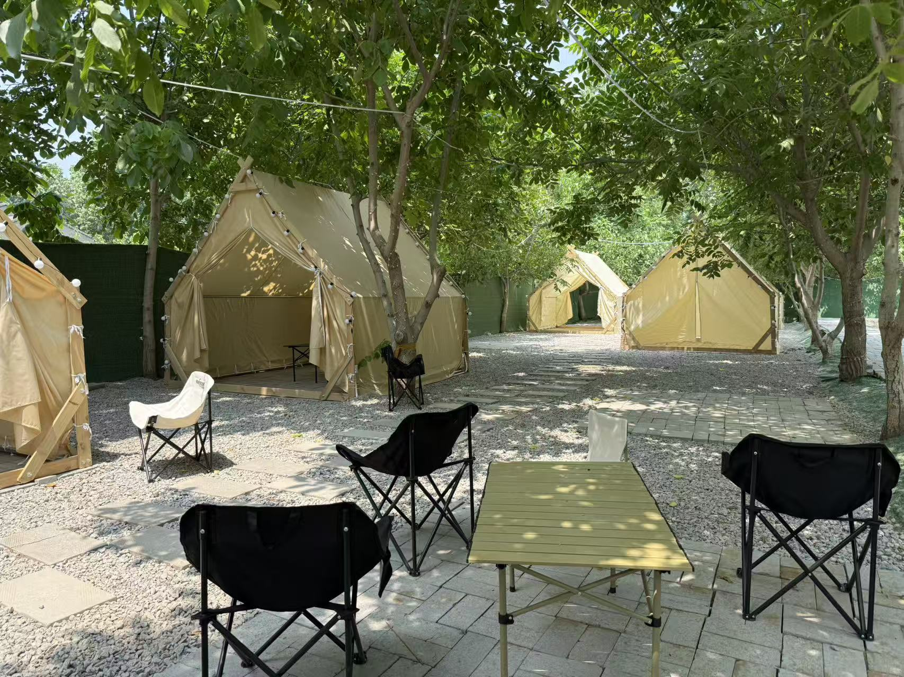
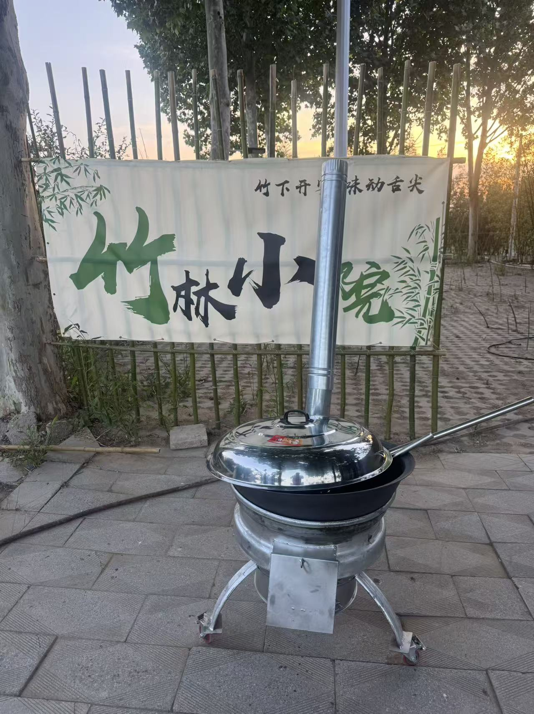
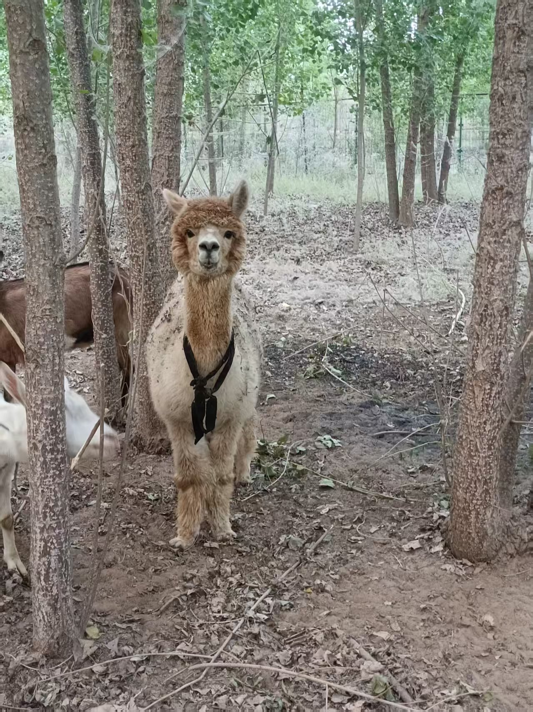
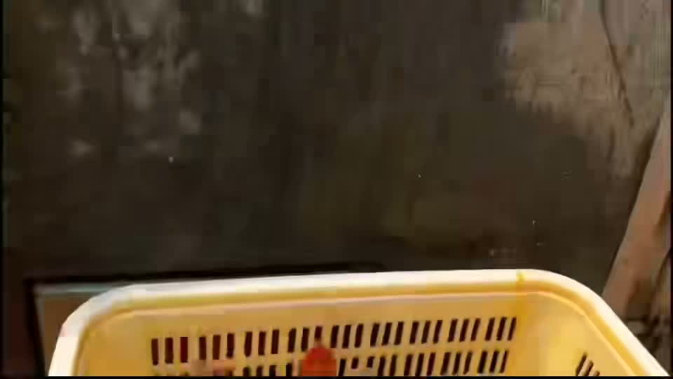
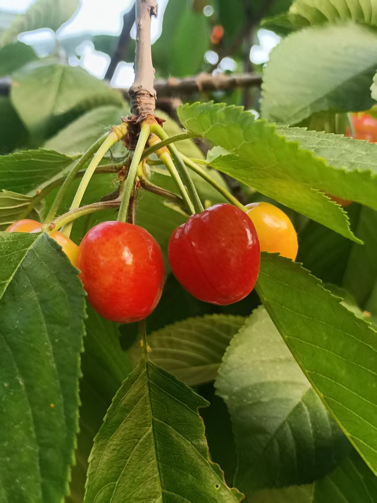

树荫露营
帐篷、烧烤、火锅、K 歌和夜风，适合朋友聚会、家庭出行和轻团建。
辛集市 · 石家庄周边 · 生态田园轻度假
离城市不远，离自然很近。
不用远行，也能让身体松下来。树荫、草地、动物和一顿热乎饭，把人从快节奏里轻轻拽回来。
树荫露营、竹林小院私厨、萌宠互动、生态研学、水边垂钓、户外烧烤和应季采摘，都安排在一座田园里。
FOUR FARM SCENES
从树荫下坐下来，到夜晚把饭吃热；从孩子撒欢，到大人真正放松。老把式农场把露营、私厨、萌宠和生态体验放在同一座田园里。
帐篷、烧烤、火锅、K 歌和夜风，适合朋友聚会、家庭出行和轻团建。
竹林小院、铁锅炖大鹅、田园饭菜，适合家庭宴请、朋友小聚和小型商务接待。
喂小动物、儿童垂钓、浑水摸鱼、沙坑恐龙化石挖掘，让孩子能跑、能摸、能探索。
溜达鸡鹅、兔子羊驼、藏香猪和巴马猪，加上采摘与研学，看到真实的农场循环。

01 · CAMPING & NIGHT GATHERING
脑子停不下来，就别再赶场。灯串亮起，烧烤开炉，朋友唱两首歌，孩子在帐篷边跑，大人终于不用端着，把话慢慢聊开。
咨询露营与团建方案
02 · BAMBOO COURTYARD
在树影和竹篱旁留一张桌子，铁锅炖大鹅、田园饭菜和私密小院放在一起，适合家庭宴请、朋友小聚和小型商务接待。这里不强调热闹，而是把饭局放进更安静、更有自然气息的场景里。
咨询私厨预约03 · FAMILY PET PARK
喂小动物、儿童垂钓、浑水摸鱼、沙坑恐龙化石挖掘和果园采摘，孩子不只是换个地方看手机，而是用手、脚和好奇心认识自然。



04 · ECO FARM
百亩田园里有草地、树荫、溜达鸡鹅，也有兔子、羊、羊驼、藏香猪、巴马猪和白头猪。这里不是把动物摆出来拍照，而是让孩子和大人看到一座农场真实运转的样子。
NATURE STUDY
孩子可以观察动物吃草、捡拾真正的溜达鸡鸡蛋，也能在大人陪伴下参与铁锅炖大鹅等乡野餐食体验。这里适合亲子研学、自然观察和食农教育，让土地、动物、食物之间的关系变得看得见。
PRESENTATION
路线、场景、活动和到访信息都整理在这里，方便家庭出游、朋友聚会和团建安排提前做判断。
VISIT & RESERVATION
河北省石家庄市辛集市新垒头镇马吕村村北生态园，覆盖辛集、晋州、深泽、藁城、正定、赵县、栾城及石家庄市区周边自驾客群。